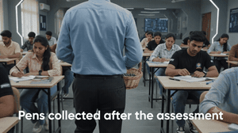
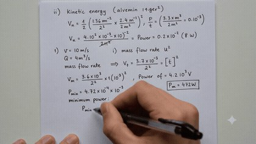
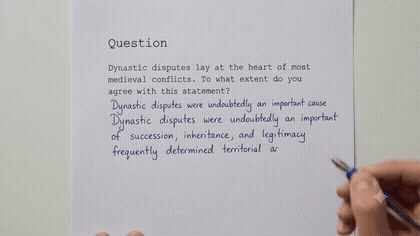
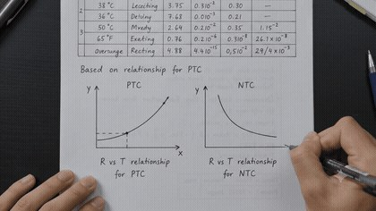

Iyal uses intelligent natural writing technology to save educators 8–10 hours a week spent on manual assessment.
Intelligent natural writing technology captures real paper, a real pen, and real time — turning naturally written strokes into computable information.
From picking up the pen to the teacher reviewing AI-marked responses — what Iyal looks like across a real exam session.
Students are assigned a unique pen for a given assessment. The pen is switched on before the assignment is taken. Students write the assessment like always — ink writing on a paper surface.
Each pen has a barcode for unique student identification. Students are free to take their written response home.
Teachers see the response of each student, and the mark awarded by the AI — with full information on student strokes, to identify where they struggled and where they did well.
A unique pen, switched on before the assessment starts — writing feels exactly the same as always.

Each pen is barcoded to a student. The written response itself stays with the student.
Teachers see each response and the AI's mark — down to the exact stroke where a student struggled.



Our in-built Stroke Intelligence converts hand-written strokes to technical typesetting language (LaTeX) — allowing for the rendering of equations, figures, diagrams, circuits, and more.
Lab reports, problem sets, and end-semester exams across Physics, Mathematics, and Engineering — at full exam scale.
CBSE, ICSE, and IB schools, plus competitive exam coaching for JEE, NEET, and GATE — same-day feedback on daily assignments and mock tests.
Live capture of a student writing mid-session — the tutor sees the working as it happens, not a photo of it.
We are currently running pilots on the IIT Madras campus, and onboarding our first institutional and tutoring partners.